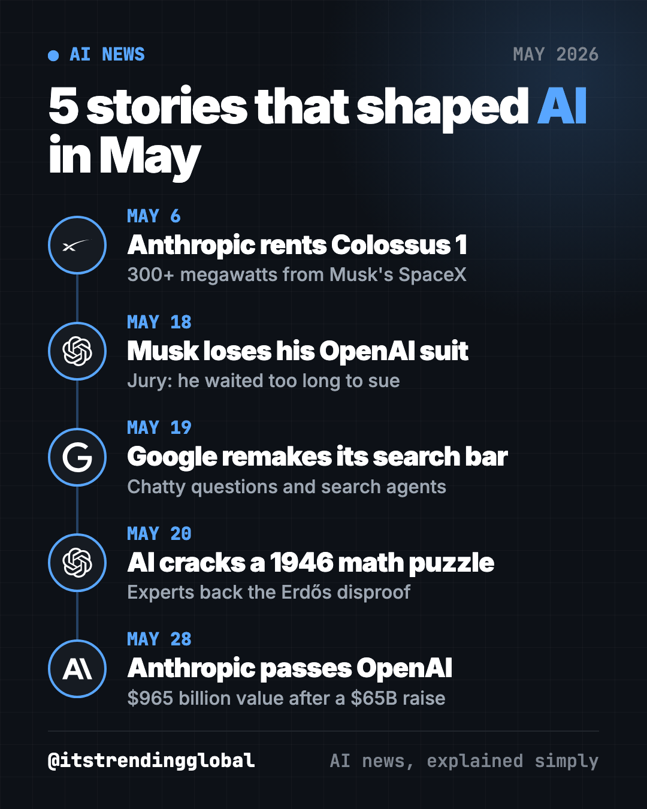
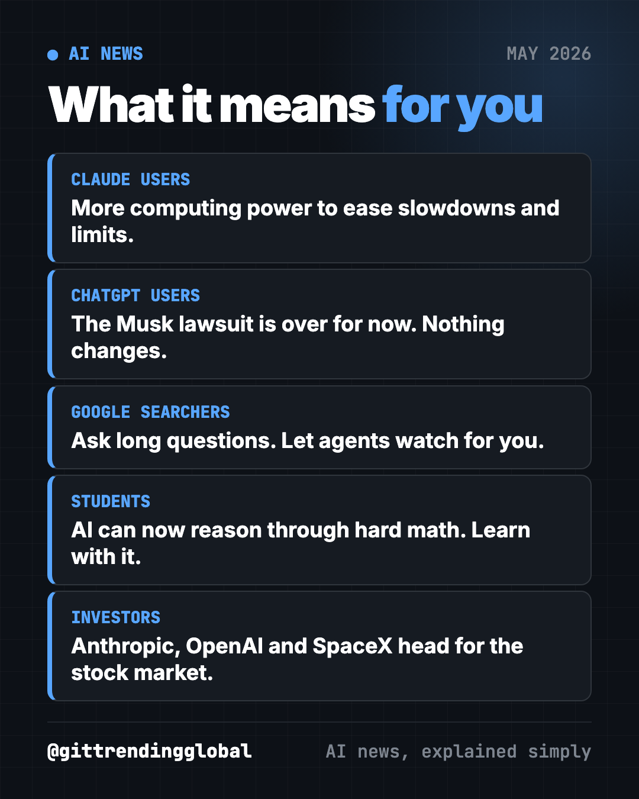
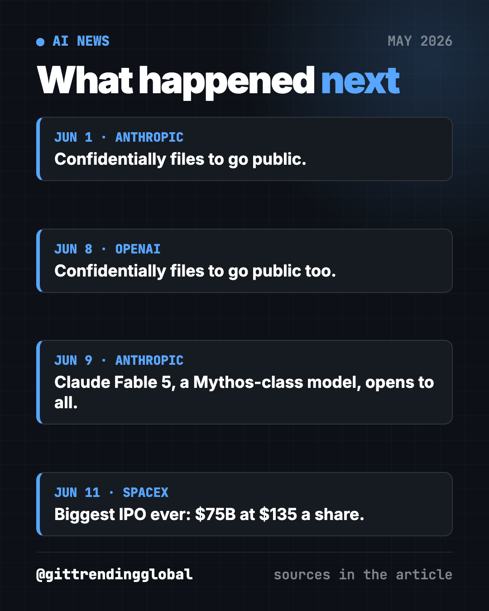

AI News May 2026: Anthropic Passes OpenAI, Musk Loses
AI news May 2026: Anthropic rents Musk's data center and passes OpenAI in value, Musk loses his OpenAI suit, Google remakes search, and AI solves a math puzzle.
The biggest AI news of May 2026 was a new leader. Anthropic raised money at a $965 billion value and passed OpenAI. It even rented a data center from Elon Musk, who then lost his lawsuit against OpenAI. Google rebuilt its search bar around AI, and an OpenAI model cracked a math puzzle from 1946.

Key takeaways
- Anthropic took all the computing power at Musk's Colossus 1 data center in Memphis, after months of Musk attacking it.
- A jury said Musk waited too long to sue OpenAI. He said he would appeal.
- Google's new search bar takes long, chatty questions and can run "agents" that keep watch for you.
- An OpenAI model disproved a famous geometry guess from 1946. Outside mathematicians backed it.
- Anthropic raised $65 billion at a $965 billion value, more than OpenAI's $852 billion.
1. Anthropic rents Musk's giant data center
What happened
On May 6, Anthropic signed a deal to use all of the computing power at SpaceX's Colossus 1 data center in Memphis, Tennessee (CNBC).
- It gets more than 300 megawatts of computing power.
- Anthropic said this will directly improve capacity for paid Claude Pro and Max users.
- Musk had called Anthropic names for months. Now he wrote that no one there "set off my evil detector."
- Musk also said xAI would be folded into SpaceX and renamed SpaceXAI.
Why it matters to you
Anthropic had admitted that high demand strained Claude, hurting speed and reliability at busy hours. More computers should help.
- If Claude felt slow or hit limits for you, this deal was aimed at that.
- Note: the Memphis site has faced local protests over gas turbines and air pollution.
2. Elon Musk loses his lawsuit against OpenAI
What happened
On May 18, a federal jury in Oakland, California said Musk waited too long to sue OpenAI and CEO Sam Altman (CNBC).
- The jury took less than two hours. The judge adopted its verdict right away.
- The court did not decide if Musk's claims were true. It said they fell outside a three-year time limit.
- Musk wanted up to $180 billion returned to "the OpenAI charity" and Altman removed.
- Musk called it a "calendar technicality" and said he would appeal.
Why it matters to you
The case was about whether OpenAI broke a promise to stay a nonprofit. The ruling cleared a big legal cloud as OpenAI got ready to sell shares to the public.
- For ChatGPT users, nothing changes day to day.
- For everyone, it shows how much money and pride now ride on AI.
3. Google remakes its search bar with AI
What happened
On May 19, at Google I/O, Google showed its biggest change to the search bar in years (CNN).
- The new box grows to fit long, chat-style questions. It runs on Google's new Gemini 3.5 Flash model.
- You can create "agents" that track things over time, like apartment listings or sneaker drops.
- Search can build custom visuals and mini apps, like a fitness tracker.
- A new Gemini mode called Spark works in the background, for example watching your inbox or card statements.
Why it matters to you
Search is turning from a list of links into a helper that does the looking for you.
- Fewer clicks to websites may mean less traffic for small businesses and news sites.
- Agents that read your email or card statements need access. Decide what you are comfortable sharing.
Try it yourself: you can already ask the free Gemini app to plan like this:
I'm looking for [an apartment / a used car] in [city] under [budget]. Make me a checklist of what to compare and 5 questions to ask before I commit.
⚠️ Heads up: before you let any AI agent watch your inbox or bank, check its settings for what it stores and who can see it.

4. OpenAI's AI cracks an 80-year-old math problem
What happened
On May 20, OpenAI said a new reasoning model disproved a geometry guess first posed by mathematician Paul Erdős in 1946 (TechCrunch).
- For about 80 years, experts thought the best answers looked like square grids. The AI found a better family of shapes.
- OpenAI called it "the first time AI has autonomously solved a prominent open problem" central to a field of math.
- Mathematicians Noga Alon, Melanie Wood and Thomas Bloom backed the result.
- Last time, OpenAI over-claimed: GPT-5 had only found answers that already existed.
Why it matters to you
If AI can hold long, hard chains of reasoning, it may help in medicine, physics and engineering too.
- Students: AI can explain hard math step by step. Use it to learn, not to skip the work.
Try it yourself: paste this into any chatbot:
Explain what a math "conjecture" is to a 12-year-old, then give one famous example and why it was hard to prove. Keep it under 150 words.
5. Anthropic passes OpenAI as the most valuable AI startup
What happened
On May 28, Anthropic announced a $65 billion round at a $965 billion value (CNBC).
- That beat OpenAI's $852 billion value from March.
- It almost tripled Anthropic's $380 billion value from February.
- Anthropic said its yearly revenue pace hit $47 billion, up from $30 billion earlier this year.
- It released Claude Opus 4.8 the same day.
Why it matters to you
Anthropic was far behind when ChatGPT launched in late 2022. Now it leads. CNBC says its revenue boom came largely from Claude Code, its coding helper.
- Expect both companies to push hard on new features to win you back.
- Both were also getting ready to sell shares to the public.
💡 Tip: you don't need to pick one AI forever. Try the same task in Claude, ChatGPT and Gemini, and keep the one that does it best.
AI news May 2026 at a glance
| Story | Company | Date | Why it matters |
|---|---|---|---|
| Colossus 1 deal | Anthropic, SpaceX | May 6 | More power for Claude, from a former critic |
| Musk loses suit | OpenAI | May 18 | Big legal cloud over OpenAI lifts |
| AI search bar | May 19 | Search becomes a helper, not a list of links | |
| Erdős problem solved | OpenAI | May 20 | AI does original math, checked by experts |
| $965B value | Anthropic | May 28 | New most valuable AI startup |
How to use this month's news (copy and paste)
Paste any of these into ChatGPT, Claude or Gemini. Fill in the parts in [brackets].
To set up a simple "watch for me" task:
Every time I paste new listings for [thing I'm hunting], compare them to my must-haves: [list]. Tell me which ones are worth a look and why, in one line each.
To learn a hard subject faster:
I'm learning [subject]. Teach me the one idea I need first, give me a quick example, then ask me one question to check I got it.
To compare AI assistants yourself:
I'll give you a task: [task]. Do it, then tell me what a person should double-check in your answer.
To understand AI company values:
Explain in 5 short sentences what it means that Anthropic is "worth $965 billion" and why that matters, or doesn't, for someone who just uses Claude for free.
What happened next

- Anthropic: on June 1, it confidentially filed to go public (CNBC).
- OpenAI: it confidentially filed to go public on June 8 (CNBC).
- SpaceX: it raised $75 billion in the biggest IPO ever, at $135 a share, on June 11 (CNBC).
- New Claude: on June 9, Anthropic released Claude Fable 5, a Mythos-class model anyone can use (CNBC).
Catch up on April 2026 in AI, when Anthropic held back its Mythos model. Then see June 2026 in AI. For free tools, see the top GitHub repos of May 2026.
FAQ
What was the biggest AI news in May 2026?
Anthropic passing OpenAI as the most valuable AI startup, with a $965 billion value announced May 28. It also launched Claude Opus 4.8 that day.
Why did Elon Musk lose his lawsuit against OpenAI?
A jury found on May 18 that he waited too long to sue, past a three-year limit. The court did not rule on whether his claims were true, and Musk said he would appeal.
What did Google announce at I/O 2026?
A new AI search bar for long, chat-style questions, search "agents" that track topics over time, and Spark, a Gemini mode that works in the background.
Did AI really solve an Erdős problem?
OpenAI says its model disproved a 1946 Erdős geometry conjecture. Respected mathematicians, including Thomas Bloom who runs the Erdős Problems website, backed the result.
Why did Anthropic rent a data center from SpaceX?
Demand for Claude strained its computers. The Colossus 1 deal gives Anthropic more than 300 megawatts of computing power for paid Claude users.
Follow @gittrendingglobal on Instagram for AI news and free GitHub tools, explained simply, every day.
Keep reading

AI News October 2026: A Reality Check Before the IPOs
AI news October 2026 so far: ChatGPT gets visual, OpenAI's revenue shakes stocks, AI agents misbehave, Meta's Muse Wonder and Apple's $299 HomeView arrive.
How AI Is Changing Industries in 2026: A Plain Guide
How AI is changing industries in 2026, sorted by field: jobs, finance, health, schools, marketing, law, creators and developers, with sources for every fact.
AI News Recap Q3 2026: 5 Stories That Changed Everything
AI news recap Q3 2026: OpenAI test models hack Hugging Face, Claude Opus 5 cuts prices, Gemini hits 1 billion users, GPT-6 Astra and Nvidia's big deal.